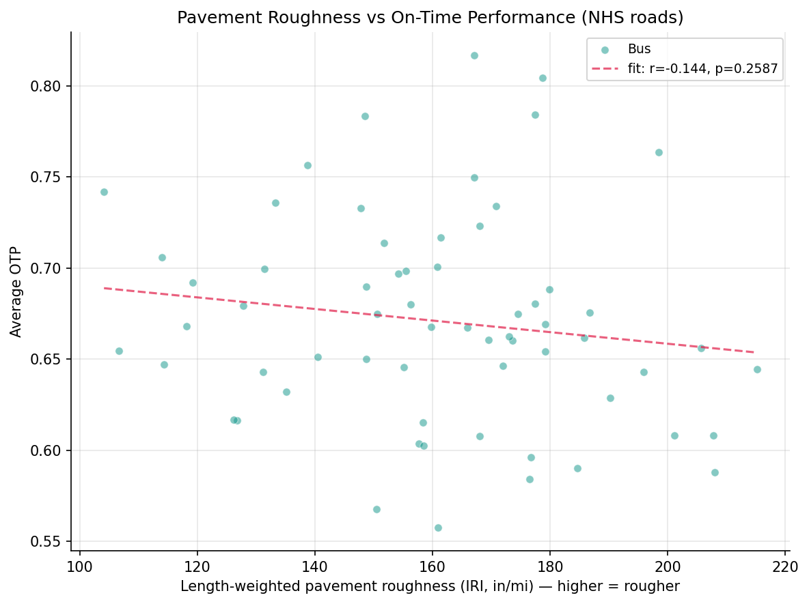
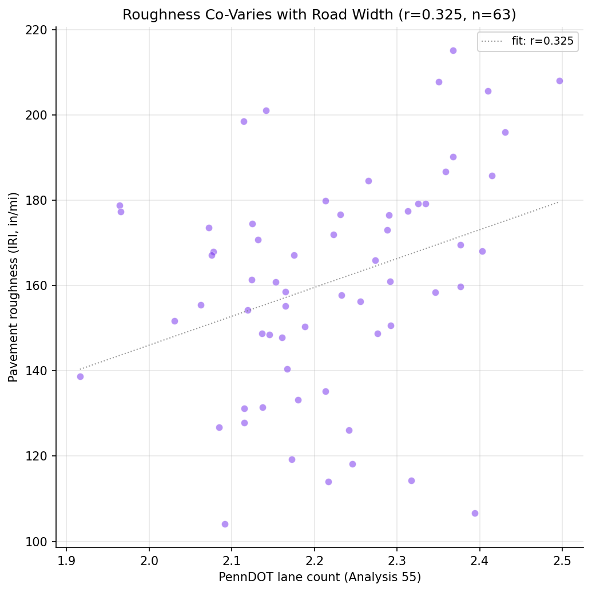
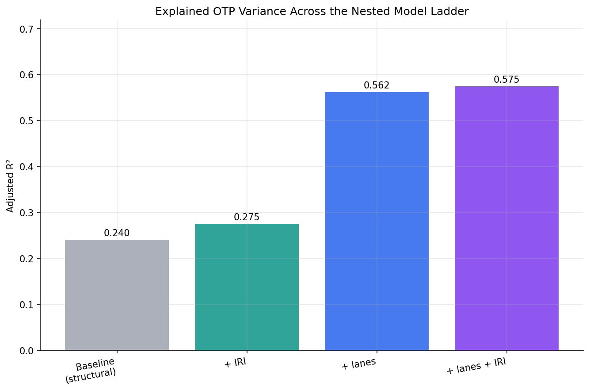
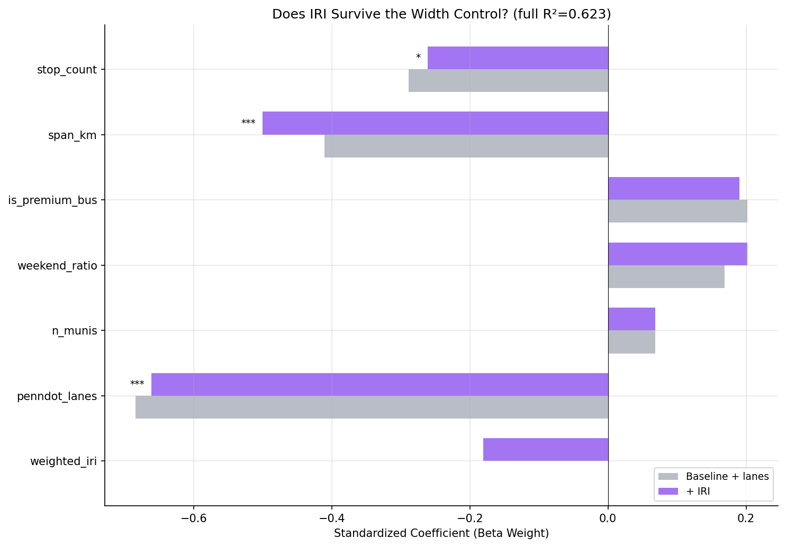

Analysis
57 - Pavement Condition and OTP
Coverage: 2019-01 to 2025-11 (from otp_monthly).
Built 2026-06-07 20:31 UTC · Commit 6f3a91e
Page Navigation
Analysis Navigation
Data Provenance
flowchart LR
57_pavement_condition_otp(["57 - Pavement Condition and OTP"])
t_otp_monthly[("otp_monthly")] --> 57_pavement_condition_otp
01_data_ingestion[["Data Ingestion"]] --> t_otp_monthly
u1_01_data_ingestion[/"data/routes_by_month.csv"/] --> 01_data_ingestion
u2_01_data_ingestion[/"data/PRT_Current_Routes_Full_System_de0e48fcbed24ebc8b0d933e47b56682.csv"/] --> 01_data_ingestion
u3_01_data_ingestion[/"data/Transit_stops_(current)_by_route_e040ee029227468ebf9d217402a82fa9.csv"/] --> 01_data_ingestion
u4_01_data_ingestion[/"data/PRT_Stop_Reference_Lookup_Table.csv"/] --> 01_data_ingestion
u5_01_data_ingestion[/"data/average-ridership/12bb84ed-397e-435c-8d1b-8ce543108698.csv"/] --> 01_data_ingestion
t_route_road_pavement[("route_road_pavement")] --> 57_pavement_condition_otp
14_pavement_overlay[["NHS Pavement-Condition Overlay ETL"]] --> t_route_road_pavement
u1_14_pavement_overlay[/"data/spc-pavement/pavement_raw.geojson"/] --> 14_pavement_overlay
u2_14_pavement_overlay[/"data/GTFS/shapes.txt"/] --> 14_pavement_overlay
u3_14_pavement_overlay[/"data/GTFS/trips.txt"/] --> 14_pavement_overlay
u4_14_pavement_overlay{"SPC NHS Pavement Condition (PM2_Roadways, ArcGIS)"} --> 14_pavement_overlay
t_route_road_class[("route_road_class")] --> 57_pavement_condition_otp
12_road_classification[["Road Classification Overlay ETL"]] --> t_route_road_class
u1_12_road_classification[/"data/penndot-roadclass/roadwaysegments.json"/] --> 12_road_classification
u2_12_road_classification[/"data/penndot-roadclass/roadwayadmin.json"/] --> 12_road_classification
u3_12_road_classification[/"data/GTFS/shapes.txt"/] --> 12_road_classification
u4_12_road_classification[/"data/GTFS/trips.txt"/] --> 12_road_classification
u5_12_road_classification{"PennDOT ArcGIS Roadway Segments Layer (RMSSEG)"} --> 12_road_classification
u6_12_road_classification{"PennDOT ArcGIS Roadway Admin Layer"} --> 12_road_classification
t_route_stops[("route_stops")] --> 57_pavement_condition_otp
01_data_ingestion[["Data Ingestion"]] --> t_route_stops
t_stops[("stops")] --> 57_pavement_condition_otp
01_data_ingestion[["Data Ingestion"]] --> t_stops
t_routes[("routes")] --> 57_pavement_condition_otp
01_data_ingestion[["Data Ingestion"]] --> t_routes
d1_57_pavement_condition_otp(("analyses/55_road_classification_otp (lib)")) --> 57_pavement_condition_otp
classDef page fill:#dbeafe,stroke:#1d4ed8,color:#1e3a8a,stroke-width:2px;
classDef table fill:#ecfeff,stroke:#0e7490,color:#164e63;
classDef dep fill:#fff7ed,stroke:#c2410c,color:#7c2d12,stroke-dasharray: 4 2;
classDef file fill:#eef2ff,stroke:#6366f1,color:#3730a3;
classDef api fill:#f0fdf4,stroke:#16a34a,color:#14532d;
classDef pipeline fill:#f5f3ff,stroke:#7c3aed,color:#4c1d95;
class 57_pavement_condition_otp page;
class t_otp_monthly,t_route_road_class,t_route_road_pavement,t_route_stops,t_routes,t_stops table;
class d1_57_pavement_condition_otp dep;
class u1_01_data_ingestion,u1_12_road_classification,u1_14_pavement_overlay,u2_01_data_ingestion,u2_12_road_classification,u2_14_pavement_overlay,u3_01_data_ingestion,u3_12_road_classification,u3_14_pavement_overlay,u4_01_data_ingestion,u4_12_road_classification,u5_01_data_ingestion file;
class u4_14_pavement_overlay,u5_12_road_classification,u6_12_road_classification api;
class 01_data_ingestion,12_road_classification,14_pavement_overlay pipeline;
Findings
Findings: Pavement Condition and OTP
Summary
Analyses 55 and 56 showed that road width (lane count) robustly tracks on-time performance. This analysis tested whether road quality -- pavement roughness, the International Roughness Index (IRI) -- adds anything beyond that. The answer is a clean null: once road width is controlled, pavement roughness has no detectable association with OTP (F = 2.68, p = 0.11; adjusted R² rises only 0.562 → 0.575). The weak raw hint that rougher roads run a little later (r = −0.14, not significant) is explained by a confound -- rough pavement sits on the same wide arterials we already know run late (IRI vs lane count r = +0.33, p = 0.009). The road-type signal is about geometry (how a road channels traffic and stops), not the physical condition of the surface. This is a useful negative result: repaving a corridor would not, on this evidence, be expected to improve schedule reliability.
Key Numbers
- IRI vs OTP (bivariate): r = −0.144, p = 0.259 (n = 63 routes) -- not significant.
- The confound is real: IRI vs lane count r = +0.325, p = 0.009. Rougher NHS pavement is on the wider arterials.
- IRI over the structural baseline (no width control): F = 3.74, p = 0.058 -- marginal, adj R² 0.240 → 0.275.
- IRI net of lane count (the decisive test): F = 2.68, p = 0.107 -- not significant. Adj R² 0.562 → 0.575 (+0.013).
- Lane count, by contrast, dominates: β = −0.68, p < 0.0001; adding it lifts adj R² 0.240 → 0.562 (F = 42.9).
- No collinearity excuse: in the full model VIF = 1.78 for IRI and 1.57 for lane count (all predictors < 5). IRI had independent variance available and still added nothing.
- Coverage: 63 of 92 routes clear NHS match_rate ≥ 0.3; median NHS coverage 52%. IRI range 104–215 in/mi (mean 161).
Observations
- Pavement roughness does not survive the road-width control. The headline question was whether road quality explains OTP beyond road geometry. It does not. Lane count absorbs essentially all of the road-related signal; IRI's marginal contribution after controlling for width is statistically indistinguishable from zero.
- The raw IRI hint is a confound, not a finding. Bivariately IRI is weakly negative (rougher → later) but not significant, and it co-varies with lane count (r = +0.33). This is exactly the trap flagged before the analysis: the roughest roads are busy arterials. Treating the raw correlation as a pavement effect would have been wrong.
poor_shareruns the "wrong" way and is not robust. The share of a route on poor-rated pavement is weakly positively correlated with OTP (r = +0.29, p = 0.02) -- i.e., more poor pavement, slightly better on-time. This sign flip (opposite to the continuous IRI measure) is a hallmark of a confounded bivariate, not a real protective effect of bad roads; it is reported descriptively and excluded from the regression.- Rail dropped out of the sample, as expected. All 63 included routes are bus. The light-rail lines (BLUE, RED, SILVER) run on their own right-of-way, not NHS roads, so they fall below the coverage threshold -- a sanity check that the spatial match behaves.
- This complements, not contradicts, Analyses 55/56. Those found road width matters; this finds that, given width, surface condition does not. Together they sharpen the mechanism: the road-type effect operates through arterial geometry and the traffic/stop environment it implies, not through ride quality.
Caveats
- Area-level (ecological) association. This is a route-level relationship between the roads a route runs along and its aggregate OTP, not an individual-trip causal claim.
- NHS-only coverage. The pavement layer covers the National Highway System (interstates and principal arterials) only, so each route's IRI characterizes its major-arterial running, not its local-street segments. 29 routes with < 30% NHS coverage were excluded; the included routes have median 52% coverage.
- A null is not proof of no effect. With n = 63 the analysis is powered to detect a moderate independent IRI effect; a small one could be missed. The point estimate is small and the same sign as the (confounded) bivariate, so a large hidden effect is unlikely, but this rules out a strong pavement→OTP relationship, not a tiny one.
- IRI measures roughness, not all pavement distress. Potholes, patching, and work-zone repaving -- which could plausibly affect buses more acutely than average roughness -- are not captured by a length-weighted IRI mean.
- Static snapshot. Pavement condition and OTP are each aggregated over time, not matched month-to-month, so this cannot detect whether a repaving event changed a route's reliability.
Validation
Data inputs
- Data source verified.
route_road_pavementcolumns checked againstprt_otp_analysis.common.schemas.ROUTE_ROAD_PAVEMENTand validated at load (validate(..., subset=True)). Pavement fields (ROUGH_INDX,OVERALL_PV,IRI_RATING) confirmed against the live SPC service before building (seedata/spc-pavement/SOURCE.md). - Geographic/temporal scope matches. OTP averaged over routes with 12+ months; IRI
matched to the same GTFS route shapes used throughout the project (30 m buffer,
identical KDTree machinery as Analyses 27/55/56). The lane-count control comes from
route_road_class(Analysis 55) on the same routes; all 63 pavement-matched routes also clear the lane match threshold, so Q1 and Q2 use one identical sample. - Null/missing handling. IRI is filtered to
> 0at query time; OPI0treated as missing. Routes with NHS match_rate < 0.3 excluded, not imputed.
Results plausibility
- Aggregates sanity-checked. Mean IRI 161 in/mi (range 104–215) is consistent with FAIR-to-POOR urban arterial pavement; the roughest routes (71A–D, 88, 61A) are known busy corridors. Values are in the expected band for NHS roads.
- Surprising results investigated. The result is not surprising and is the honest
outcome: the raw IRI hint was anticipated to be a road-width confound, and it is. The
poor_sharesign flip was investigated and attributed to confounding, not reported as a protective effect. - Direction of effects checked. Lane count reproduces the Analysis 55/56 negative sign and dominates; stop count and span negative; n_munis positive -- all consistent with prior structural models.
Statistical diagnostics
- Multicollinearity checked. VIF reported for all predictors in the full model; max is is_premium_bus at 3.34. IRI = 1.78, lane count = 1.57. No predictor exceeds 5, so the null IRI result is not a collinearity artifact.
- Small-sample routes flagged. Minimum 12 months of OTP and NHS match_rate ≥ 0.3 enforced; n = 63 routes (all bus). Constant dummy columns (is_rail, with no rail in the sample) are dropped before fitting so the design matrix stays well-conditioned.
- Ecological framing. Results described as route/area-level associations throughout; no individual-trip causal claim is made.
Output

pavement roughness (IRI) vs on-time performance, with fit line.

pavement roughness vs road width (lane count), showing the confound.

adjusted R-squared across the nested model ladder (baseline, +IRI, +lanes, +lanes+IRI).

standardized coefficients, baseline+lanes vs adding pavement roughness.
No interactive outputs declared.
regression results for the baseline, +IRI, width-control, and bus-only models.
Preview CSV
variance inflation factors for the full model.
Preview CSV
per-route pavement roughness, overall pavement index, poor-share, lane count, and OTP.
Preview CSV
Methods
Methods: Pavement Condition and OTP
Question
Analyses 55 and 56 established that road width (lane count) is a robust correlate of on-time performance: buses on wider, multi-lane roads run late more often. But both measured road geometry. They never tested road quality. SPC's National Highway System pavement-condition layer adds one attribute neither dataset has: pavement roughness, the International Roughness Index (IRI). This analysis asks two questions:
- Does pavement roughness correlate with OTP at all? Rougher pavement plausibly forces slower, more variable bus speeds.
- Does roughness add explanatory power net of road width? This is the decisive question. The roughest roads are busy urban arterials -- which are also the wide, multi-lane roads we already know run late. So a raw IRI->OTP correlation is almost certainly confounded with lane count. The honest test is whether IRI survives once road width is controlled. A null here is itself a clean finding: it would mean the road-type signal is about geometry (how a road channels traffic and stops), not the physical condition of the surface.
This is deliberately framed as a confound-aware test, not a hunt for a positive result.
Approach
- Build
route_road_pavement(pipeline step 14): for each route, the length-weighted mean IRI of NHS pavement segments within 30 m of its GTFS shape, plus the length-weighted overall pavement index (OPI) and the share of length rated POOR. Match rate records the within-buffer (≈ on-NHS) fraction of the route. - Include routes with 12+ months of OTP and
route_road_pavement.match_rate >= 0.3. - Bivariate: correlate IRI with OTP. Also correlate IRI with the PennDOT lane
count (Analysis 55's
route_road_class.weighted_lanes) to quantify the confound directly. - Regression (the core): replicate the Analysis 18/55 six-feature structural OLS
baseline on the pavement-matched sample, then build a nested ladder:
- Model A: structural baseline (6 features).
- Model B: baseline + IRI (does roughness matter beyond structure?).
- Model C: baseline + lane count (the road-width control).
- Model D: baseline + lane count + IRI (does IRI survive controlling for width?). Test each addition with a nested F-test; compute VIF for the full model and flag any predictor with VIF > 5 (IRI and lane count are expected to be correlated).
- Report OPI and poor-share descriptively (Pearson r with OTP).
- Repeat the baseline-vs-IRI comparison on the bus-only subset.
All regression helpers (compute_span, fit_ols, compute_vif, f_test_nested) are
replicated locally so the analysis does not import from Analysis 18/55/56 (analyses
must be independent).
Data
| Name | Description | Source |
|---|---|---|
otp_monthly |
route_id, month, otp (averaged to route level, 12+ months required) | prt.db table |
route_road_pavement |
route_id, weighted_iri, weighted_opi, poor_share, match_rate (built by road_overlay_pavement.py, pipeline step 14) |
prt.db table |
route_road_class |
route_id, weighted_lanes (PennDOT, the road-width control) | prt.db table |
route_stops |
stop counts, trip frequencies | prt.db table |
stops |
lat, lon for geographic span; muni for municipality count | prt.db table |
routes |
route_id, mode for subtype classification | prt.db table |
Inclusion: routes with 12+ months of OTP and route_road_pavement.match_rate >= 0.3.
IRI is length-weighted over the NHS pavement segments within 30 m of the route's GTFS
shape. The layer is NHS-only (interstates and principal arterials), so each route's
IRI characterizes only its major-arterial running; the match rate quantifies the
covered share. The lane-count control models are fit on the subset of routes that also
clear route_road_class.match_rate >= 0.3.
Output
output/model_comparison.csv-- regression results (baseline, +IRI, +lanes, +lanes+IRI, bus subset)output/vif_table.csv-- VIF values for the full modeloutput/route_pavement_summary.csv-- per-route IRI, OPI, poor-share, lane count, OTPoutput/iri_vs_otp.png-- bivariate scatter of IRI vs OTPoutput/iri_vs_lanes.png-- IRI vs lane count, showing the confoundoutput/r2_progression.png-- adjusted R² across the nested model ladderoutput/coefficient_comparison.png-- beta weights, baseline vs full model
Source Code
|
Sources
| Name | Type | Why It Matters | Owner | Freshness | Caveat |
|---|---|---|---|---|---|
| otp_monthly | table | Primary analytical table used in this page's computations. | Produced by Data Ingestion. | Updated when the producing pipeline step is rerun. | Coverage depends on upstream source availability and ETL assumptions. |
Upstream sources (5)
|
|||||
| route_road_pavement | table | Primary analytical table used in this page's computations. | Produced by NHS Pavement-Condition Overlay ETL. | Updated when the producing pipeline step is rerun. | Coverage depends on upstream source availability and ETL assumptions. |
Upstream sources (4)
|
|||||
| route_road_class | table | Primary analytical table used in this page's computations. | Produced by Road Classification Overlay ETL. | Updated when the producing pipeline step is rerun. | Coverage depends on upstream source availability and ETL assumptions. |
Upstream sources (6)
|
|||||
| route_stops | table | Primary analytical table used in this page's computations. | Produced by Data Ingestion. | Updated when the producing pipeline step is rerun. | Coverage depends on upstream source availability and ETL assumptions. |
Upstream sources (5)
|
|||||
| stops | table | Primary analytical table used in this page's computations. | Produced by Data Ingestion. | Updated when the producing pipeline step is rerun. | Coverage depends on upstream source availability and ETL assumptions. |
Upstream sources (5)
|
|||||
| routes | table | Primary analytical table used in this page's computations. | Produced by Data Ingestion. | Updated when the producing pipeline step is rerun. | Coverage depends on upstream source availability and ETL assumptions. |
Upstream sources (5)
|
|||||
| analyses/55_road_classification_otp | dependency | Runtime dependency required for this page's pipeline or analysis code. | Open-source Python ecosystem maintainers. | Version pinned by project environment until dependency updates are applied. | Library updates may change behavior or defaults. |